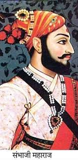

Chhatrapati Sambhaji Maharaj
(1657-1689)
Ascension to the Throne:
Sambhaji Maharaj became the Chhatrapati of the Maratha Empire after his father Shivaji Maharaj's death in 1680.
Military Campaigns:
Sambhaji Maharaj led military campaigns against the Mughals and other neighboring kingdoms. He fought battles to defend the Maratha territories and expand the empire's influence.
Literary Contributions:
Sambhaji Maharaj was a scholar and poet. He wrote several literary works, including a biography of his father titled "Shivabharata" and a treatise on statecraft called "Niti Aniti," emphasizing the principles of governance and ethics.
Construction and Development:
Sambhaji Maharaj continued the construction of forts and infrastructure initiated by his father. He worked on strengthening the Maratha navy and fortifying key locations in the empire.
Relations with Mughals:
Sambhaji Maharaj faced constant threats from the Mughal Empire, led by Emperor Aurangzeb. Despite facing immense pressure and military campaigns from the Mughals, he refused to bow down to their rule.
Capture and Execution:
Sambhaji Maharaj was captured by the Mughals in 1689. Even in captivity, he refused to convert to Islam and remained steadfast in his beliefs. He was brutally tortured and executed by Aurangzeb's forces.
Legacy and Inspiration:
Chhatrapati Sambhaji Maharaj's bravery, sacrifice, and unwavering commitment to his people and his beliefs have made him a revered figure in Maratha history. His life and struggles continue to inspire generations in Maharashtra and across India.
Biographies
- "Sambhaji" by Vishwas Patil
- "Sambhaji: The Great Maratha" by Anant Pai
- "A Forgotten Chapter of Maratha History: The Reign of Chhatrapati Sambhaji" by S. R. Sharma
- Chhatrapati Sambhaji ek Chikitsa by Dr. Jaisingrao Pawar
- Chhatrapati Sambhaji Maharajanchi Rajneeti by Dr. Kedar Phalke
- Sambhajiraja Jwalajwalantejas by Dr. Sadashiv Shivade